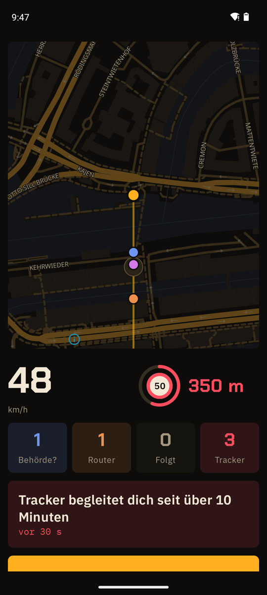

Blitzer-App: erlaubt für Beifahrer
Tempo, feste Blitzer und Fahrzeug-Funk mit Ansage, nur für Beifahrer.
APK herunterladenQuellcode auf GitHub
Kostenlos, Android 8.0 oder neuer, läuft auf GrapheneOS ohne Google-Dienste. Kein Konto.

Eine Blitzer-App (Android) mit Beifahrer-Modus: großes Tempo, Abstand zum nächsten festen Blitzer, Zähler für Fahrzeug-Router und mögliche Behördentechnik, alles mit Ansage. Standardmäßig aus: wer es einschaltet, bestätigt, dass er nicht selbst fährt.
Was Funkblick nicht kann
- Keine Richtung. Ein Handy misst nur, wie stark ein Signal ist. Der Winkel im Radar ist ein fester Platz pro Gerät, kein Kompass.
- Nur Zugangspunkte. Android zeigt WLAN-Router und Hotspots, keine Geräte, die nur verbunden sind. Eine Kamera im fremden Heimnetz sieht Funkblick nicht.
- Kein Behördenfunk. Polizei und Rettungsdienst funken per TETRA um 400 MHz. Das empfängt kein Handy. Funkblick sieht nur WLAN und Bluetooth ihrer Geräte, wenn sie welche haben.
- Zufallsadressen. Handys und Tracker wechseln ihre Bluetooth-Adresse. Funkblick liest dann, was das Gerät sendet, statt den Hersteller zu raten.
Häufige Fragen
Blitzer-App: Beifahrer darf, Fahrer nicht?
Ja. Für den Beifahrer ist die Blitzer-App erlaubt, solange sie nicht für den Fahrer warnt. Deshalb fragt Funkblick vor dem Einschalten nach.
Ist Funkblick eine Blitzerwarner-App?
Teilweise: Es warnt vor festen Blitzern aus OpenStreetMap. Mobile Blitzer kennt es nicht, dafür öffnet ein Knopf Blitzer.de.
Sind Blitzer-Apps erlaubt?
Besitzen ja, als Fahrer benutzen nein. § 23 Abs. 1c StVO verbietet Fahrern, Geräte oder App-Funktionen zu nutzen, die Verkehrskontrollen anzeigen: 75 € und ein Punkt. Das gilt laut Gerichten auch, wenn das Handy des Beifahrers für den Fahrer warnt.
Woher kommen die Blitzer?
Aus OpenStreetMap: rund 5.200 feste Blitzer in Deutschland, fest in der App, offline. Mobile Blitzer kennt Funkblick nicht. Dafür öffnet ein Knopf die Blitzer.de-App.
Erkennt Funkblick Polizeiautos?
Nur indirekt: Fahrzeug-Router (Cradlepoint, Sierra Wireless, Teltonika) und Bodycam-Hersteller (Axon, Motorola Solutions) senden WLAN oder Bluetooth. Dieselben Router stecken in Bussen, Rettungs- und Lieferwagen. Polizeifunk (TETRA) empfängt kein Handy.